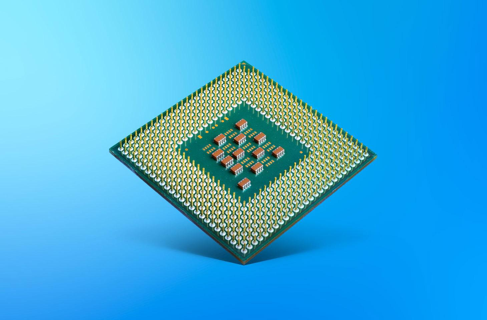
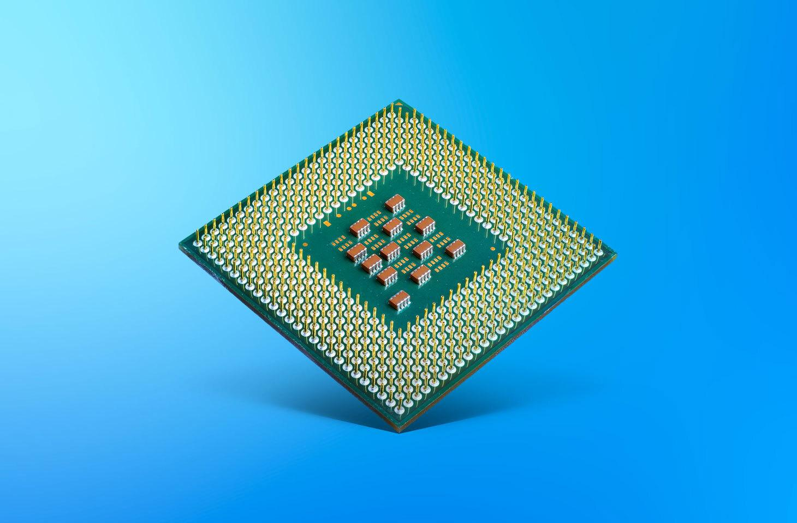

.png)
Kaк е устроен централният процесор?
Анатомията на централния процесор включва няколко ключови компонента и структури, които работят заедно, за да осъществят обработката на данни и изпълнението на инструкции. Съвременният микропроцесор най-общо се състои от ядро и кеш-памет (от първо, второ и трето ниво, а може и да липсва) и входни, изходни и контролни изводи от общ електрически характер.

Той изпълнява набор от команди, реализирани логически от транзисторни схеми. Основни характеристики са: честота на работа на ядрото, честота на работа с входно/изходните канали и обем на кешпаметта за всяко ниво. Процесорът също така може да бъде синхронизиран с външен или вътрешен източник на честота – кварц, или асинхронен, който не използва синхронизиращ източник.

Той изпълнява набор от команди, реализирани логически от транзисторни схеми. Основни характеристики са: честота на работа на ядрото, честота на работа с входно/изходните канали и обем на кешпаметта за всяко ниво. Процесорът също така може да бъде синхронизиран с външен или вътрешен източник на честота – кварц, или асинхронен, който не използва синхронизиращ източник.
Процесорите работят, като извършват изчисления на базата на конкретни инструкции, записани в софтуера, работещ на компютъра. Тези инструкции, които при стартиране на дадено приложение се зареждат в оперативната памет, указват на процесора как да обработва порциите от данни. Така процесорите непрекъснато „препускат“ през инструкции и данни, които се зареждат в тях от паметта. Освен, че работят с основната памет, процесорите използват и един специален тип бързодействаща памет, наричана „кешпамет“ (cache). Кешпаметта спомага процесорите да бъдат по-продуктивни. Тя съхранява инструкции и данни, използвани от процесора. Благодарение на своята близост до главния изчислителен механизъм вътре в процесора и на факта, че процесорът често се нуждае от повторно използване на едни и същи инструкции и данни, кешпаметта поддържа процесора активен и ускорява работата му като цяло. Всъщност през повечето време процесорите работят директно с различни типове кешпамет, а тя от своя страна се свързва с основната оперативна памет. Така кешпаметта служи като бързодействащ буфер между процесора и основната памет, прехвърляйки данните в процесора, когато се нуждае от тях и ги изисква